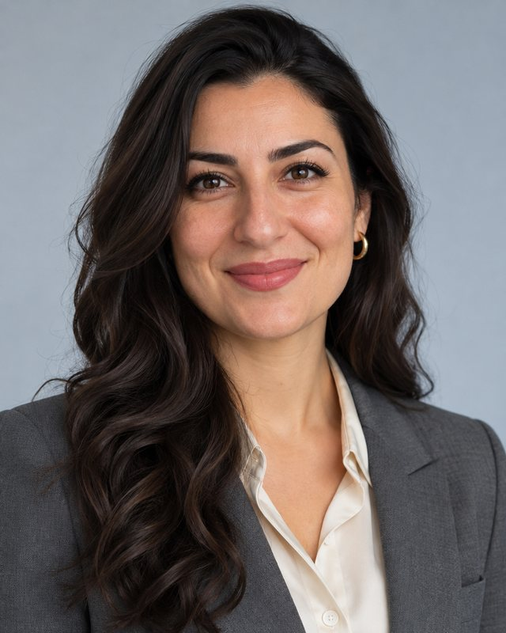
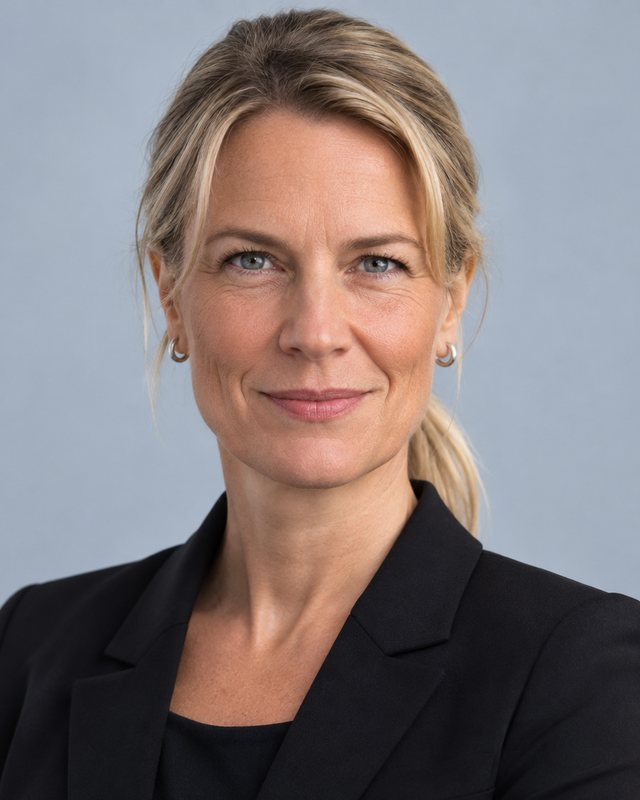
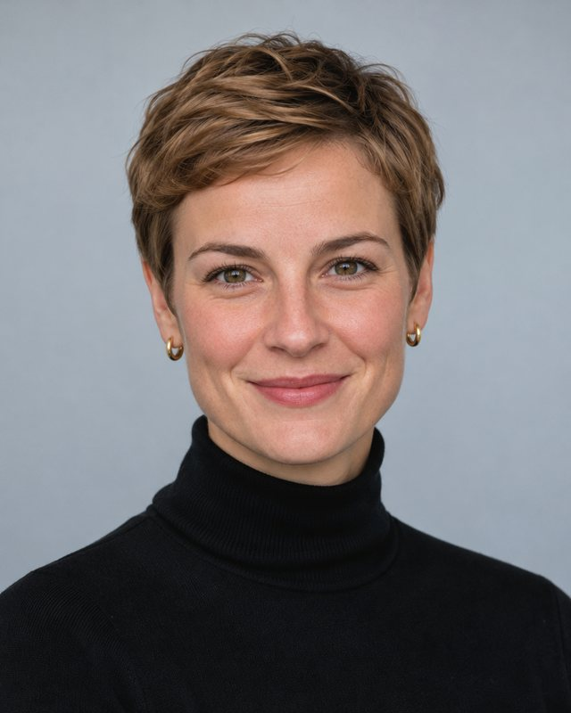

Personen
Ansprechpersonen
Die Leitung des Amtes sowie die Leitungen aller Abteilungen, Referate und Stabsstellen.
Amtsleitung

Stabsstellen
Abteilung Z: Zentrale Dienste


Abteilung 1: Grundsatz und Sonderfälle
Abteilung 2: Besondere Verfahren

Abteilung 3: Außergewöhnliche Ereignisse


Abteilung 4: Digitales und Register
Dr. Ingo Wendt
Referatsleiter 41 (Registerführer)
Referat 41: Bundesregister besonderer Angelegenheiten (BRbA)